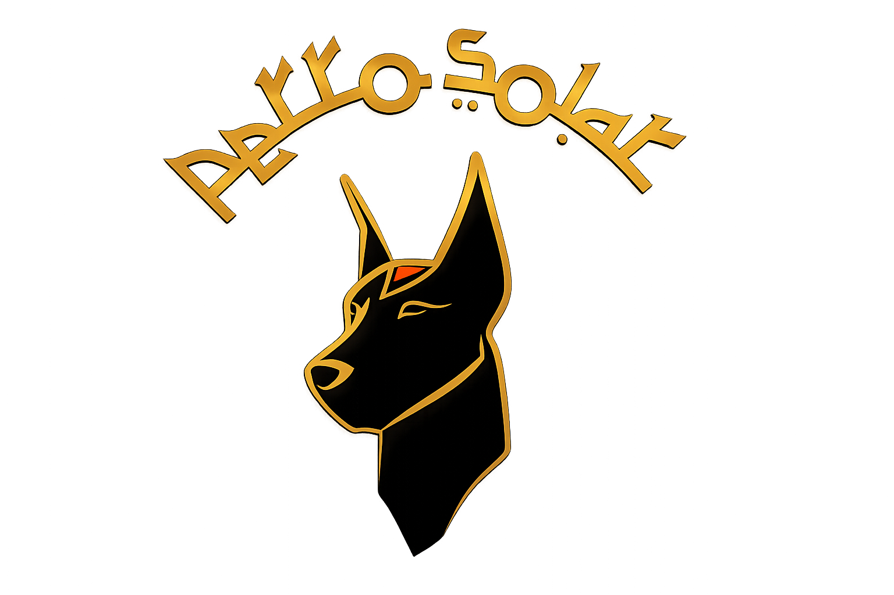
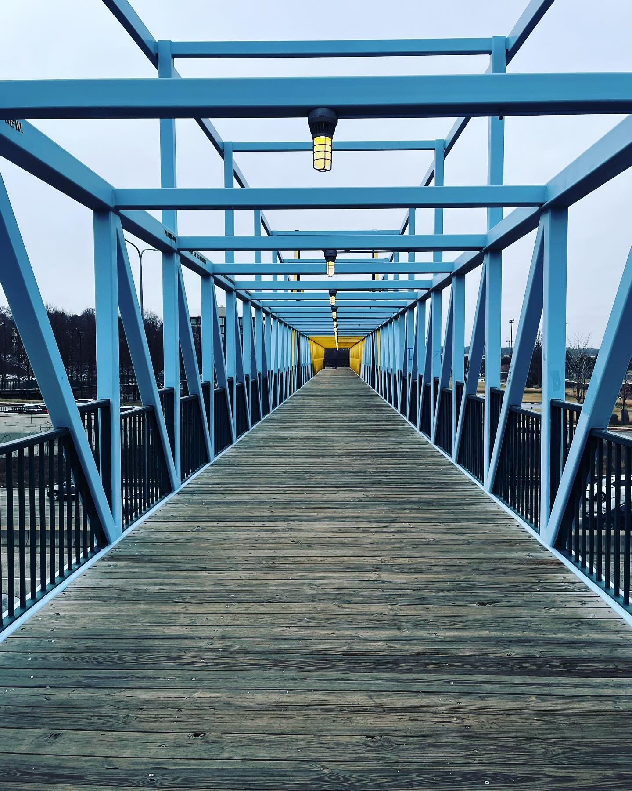
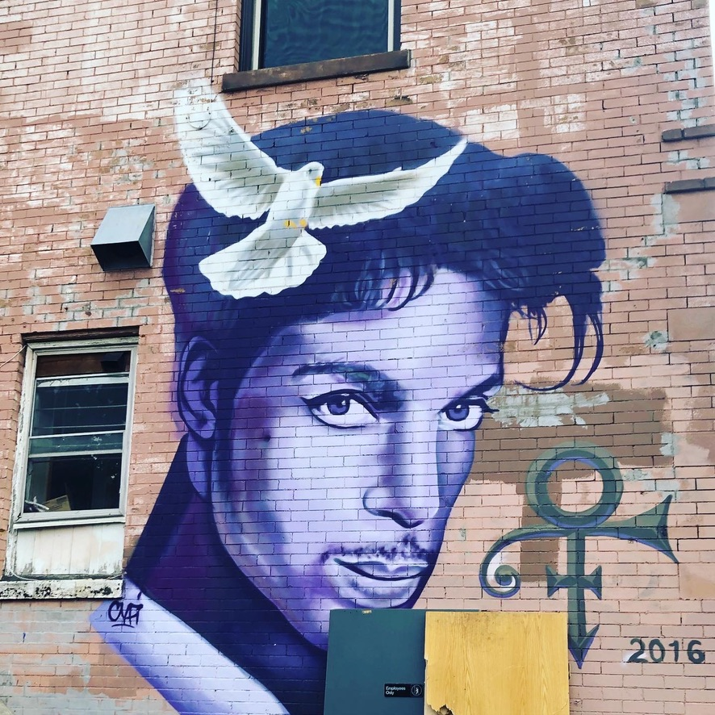
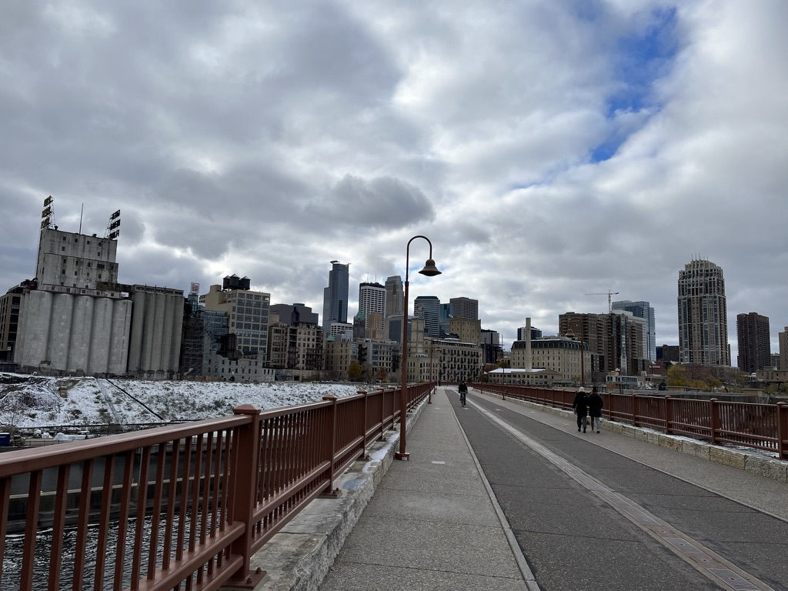
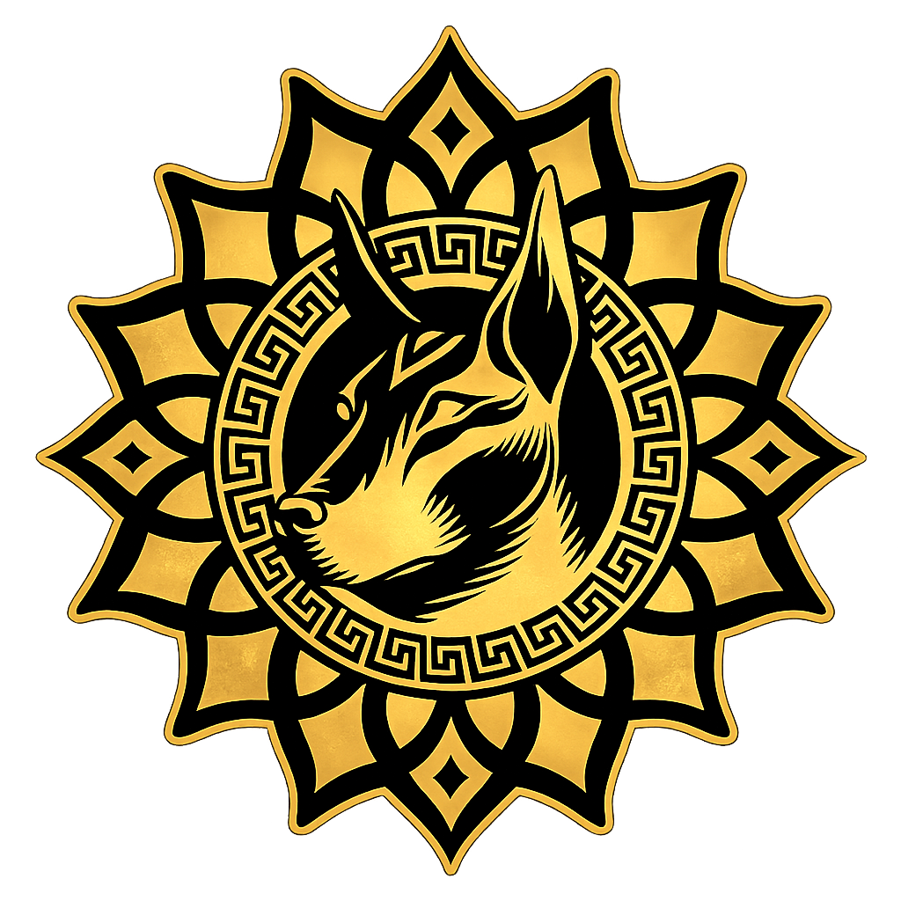

Un proyecto nacido entre Minneapolis y Bogotá, construido a partir de la pasión por el rock hispanoamericano y el deseo de crear canciones que permanezcan en el tiempo.
Perro Solar surgió de la necesidad de reencontrarse con la música después de un largo camino lejos de casa.
Cada experiencia, cada escenario y cada ciudad fueron moldeando una idea que aún no tenía nombre, pero que ya buscaba una identidad propia.
A veces volver no significa regresar a un lugar. Significa regresar a quien realmente eres.




Aunque Perro Solar nació oficialmente en Minneapolis - Mn. Vivir lejos del país permitió redescubrir el rock hispanoamericano desde otra perspectiva y comprender que la música también podía convertirse en una forma de mantener vivas las raíces.
Entre escenarios, salas de ensayo y una ciudad profundamente conectada con la historia de Prince, empezó a tomar forma la idea de crear un proyecto con una voz propia, inspirado por la diversidad cultural y la libertad creativa que caracterizan a Minneapolis.
Lo que comenzó como una idea durante una etapa en Minneapolis encontró continuidad en Bogotá. Al regresar, el proyecto volvió a reunirse con viejos amigos, músicos que compartían la misma pasión por el rock y el deseo de construir algo auténtico.
Perro Solar representa la fidelidad a un sonido auténtico, al espíritu del rock y a la convicción de crear música con identidad propia. Es el compromiso de mantenernos fieles a nuestras raíces mientras seguimos evolucionando, componiendo y construyendo un proyecto que mira hacia el futuro sin perder su esencia.
